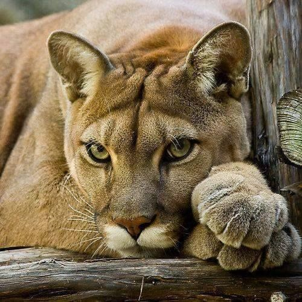
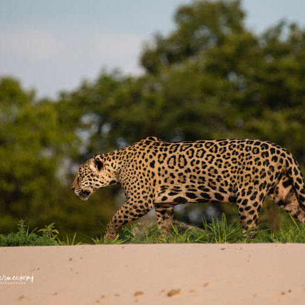
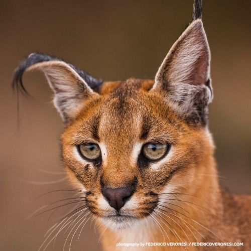
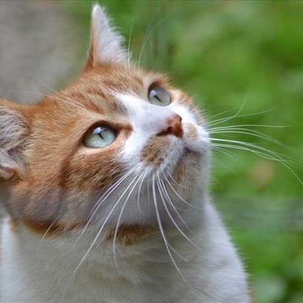
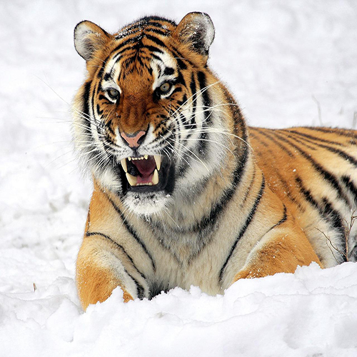
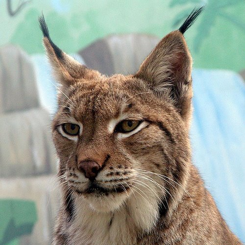

PUMA
Il puma, chiamato anche coguaro o leone di montagna,
è un carnivoro appartenente alla famiglia Felidae presente in America settentrionale, centrale e meridionale.

GIAGUARO
Il giaguaro è un mammifero carnivoro della famiglia dei felidi.
È il più grosso felide americano e il terzo più grande del mondo dopo la tigre e il leone.

CARACAL
Il caracal è un felide di media grandezza.

GATTO
l gatto domestico è un mammifero carnivoro appartenente alla famiglia dei felidi. Si possono contare una cinquantina di razze differenti
riconosciute con certificazioni. Essenzialmente territoriale e crepuscolare, il gatto è un predatore di piccoli animali, specialmente roditori.

TIGRE
La tigre è un mammifero carnivoro della famiglia dei felidi. È il più grande dei cosiddetti "grandi felini" che costituiscono il genere Panthera. È un cosiddetto predatore alfa, ovvero si colloca all'apice della catena alimentare,
non avendo predatori in natura, a parte l'uomo.

LINCE
La lince europea o lince eurasiatica è uno dei maggiori predatori delle foreste europee e siberiane. Presenta un colore giallo-scuro con macchie nere.
Una volta questo felino era presente in tutta Europa.
È il più grosso felide americano e il terzo più grande del mondo dopo la tigre e il leone.
